12. IBM DB2 Express-C 10.5
Nous abordons maintenant le portage sur DB2 de ce qui a été fait avec MySQL. Les deux SGBD ont en effet la même stratégie de génération des clés primaires.
 |
12.1. Mise en place de l'environnement de travail
12.1.1. Environnement eclipse
Nous travaillerons avec l'environnement Eclipse suivant :
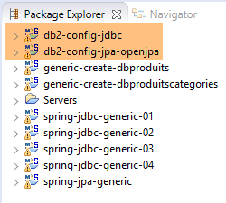 |
Les projets DB2 ci-dessus seront trouvés dans le dossier [<exemples>/spring-database-config\db2\eclipse].
Note : faire [Alt-F5] pour régénérer l'ensemble des projets Maven.
12.1.2. Génération des bases de données
Comme il a été fait avec Oracle, nous allons devoir installer le pilote JDBC de DB2 dans le dépôt Maven local.
 |
Le fichier [install.bat] contient le code suivant :
"%M2_HOME%\bin\mvn.bat" install:install-file -Dfile=db2jcc4.jar -Dpackaging=jar -DgroupId=com.ibm.jdbc -DartifactId=db2jcc4 -Dversion=1.0
où [%M2-HOME%] est le dossier d'installation de Maven (cf paragraphe 23.2). Après cette installation, le pilote JDBC de DB2 peut être référencé dans les fichiers [pom.xml] par la dépendance suivante :
<dependency>
<groupId>com.ibm.jdbc</groupId>
<artifactId>db2jcc4</artifactId>
<version>1.0</version>
</dependency>
Dans toute la suite, la connexion aux bases DB2 se font avec les identifiants [db2admin / db2admin]. Lancez DB2 et son client [Db2Manager] (cf paragraphe 23.8).
 | 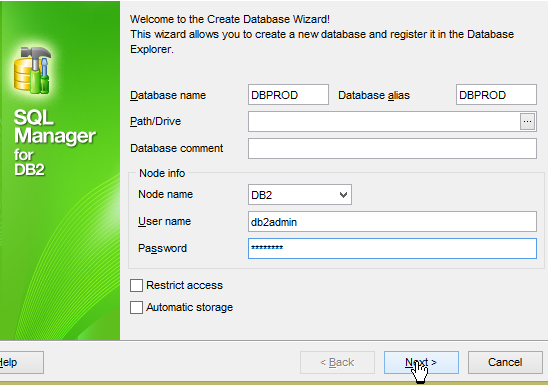 |
 |  |
 |  |
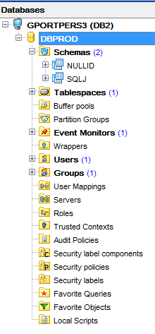 |
La base [DBPROD] est la base [dbproduits] des précédents SGBD. Mais [DB2Manager] ne m'a pas autorisé à utiliser ce nom (trop long pour lui peut-être). Maintenant nous créons la table [PRODUITS] avec la configuration d'exécution Eclipse suivante [generic-create-dbproduits-jpa] :
 | 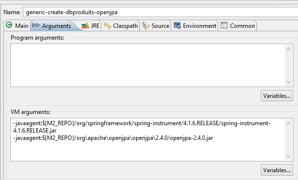 |
L'exécution crée la table [PRODUITS] dans la base [DBPROD] :
 |
- en [1], ci-dessus, la séquence n'a pas été générée par [OpenJpa] mais bien par DB2 lui-même qui l'utilise de façon interne pour générer des clés primaires ;
Maintenant, exécutez les configurations :
- [spring-jdbc-generic-01.IntroJdbc01] ;
- [spring-jdbc-generic-01.IntroJdbc02] ;
- [spring-jdbc-generic-03.JUnitTestDao1] ;
- [spring-jdbc-generic-03.JUnitTestDao2] ;
Elles doivent toutes réussir.
Générons maintenant la base [dbproduitscategories]. Elle sera appelée ici [DBCAT] pour les raisons déjà évoquées de restriction sur la longueur des noms de base. Refaites pour [DBCAT] la procédure réalisée pour créer [DBPROD].
 |
Nous créons maintenant les tables de la base [DBCAT] à partir d'Eclipse avec la configuration [generic-create-dbproduitscategories-openjpa] :
 | 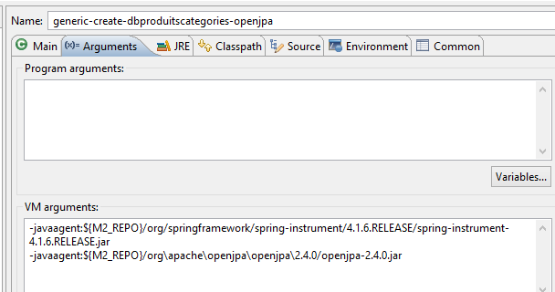 |
Cette exécution donne le résultat suivant :
 | 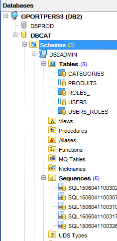 |
Il faut modifier la colonne [VERSIONING] des cinq tables afin qu'elles aient 1 comme valeur par défaut :
 |
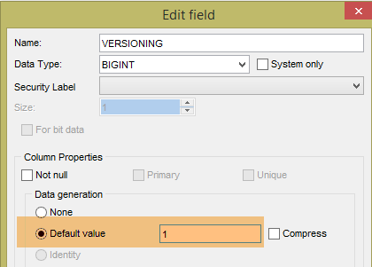 |
L'opération est à faire pour les cinq tables.
Maintenant, exécutez les configurations :
- [spring-jdbc-generic-04.JUnitTestDao] ;
- [spring-jpa-generic-JUnitTestDao-openjpa] ;
Elles doivent réussir toutes les deux.
12.2. Configuration de la couche JDBC
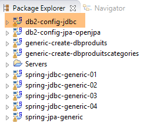 | 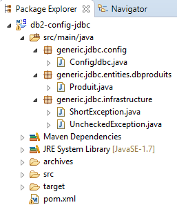 |
Le projet [db2-config-jdbc] configure la couche [JDBC] de l'architecture de tests suivante :
 |
Le projet est analogue au projet de configuration [mysql-config-jdbc] de la couche JDBC du SGBD MySQL (cf paragraphe 3.3). Nous ne présentons que les modifications :
Le fichier [pom.xml] importe le pilote JDBC de DB2 :
<project xmlns="http://maven.apache.org/POM/4.0.0" xmlns:xsi="http://www.w3.org/2001/XMLSchema-instance"
xsi:schemaLocation="http://maven.apache.org/POM/4.0.0 http://maven.apache.org/xsd/maven-4.0.0.xsd">
<modelVersion>4.0.0</modelVersion>
<groupId>dvp.spring.database</groupId>
<artifactId>generic-config-jdbc</artifactId>
<version>0.0.1-SNAPSHOT</version>
<name>configuration generic jdbc</name>
<parent>
<groupId>org.springframework.boot</groupId>
<artifactId>spring-boot-starter-parent</artifactId>
<version>1.2.3.RELEASE</version>
</parent>
<dependencies>
<!-- dépendances variables ********************************************** -->
<!-- pilote JDBC du SGBD -->
<dependency>
<groupId>com.ibm.jdbc</groupId>
<artifactId>db2jcc4</artifactId>
<version>1.0</version>
</dependency>
<!-- dépendances constantes ********************************************** -->
....
</dependencies>
...
</project>
- lignes 18-22 : le pilote JDBC de DB2 ;
La seconde modification est dans la classe [ConfigJdbc] qui définit les identifiants d'accès aux bases :
// paramètres de connexion
public final static String DRIVER_CLASSNAME = "com.ibm.db2.jcc.DB2Driver";
public final static String URL_DBPRODUITS = "jdbc:db2://localhost:50000/dbprod";
public final static String USER_DBPRODUITS = "db2admin";
public final static String PASSWD_DBPRODUITS = "db2admin";
public final static String URL_DBPRODUITSCATEGORIES = "jdbc:db2://localhost:50000/dbcat";
public final static String USER_DBPRODUITSCATEGORIES = "db2admin";
public final static String PASSWD_DBPRODUITSCATEGORIES = "db2admin";
La troisième modification qui peut être apportée est celle du nombre maximal de paramètres qu'un [PreparedStatement] peut supporter :
// nombre max de paramètres d'un [PreparedStatement]
public final static int MAX_PREPAREDSTATEMENT_PARAMETERS = 10000;
Le test [JUnitTestPushTheLimits] génère des ordres SQL sur 5000 produits qui vont générer des [PreparedStatement] avec 5000 paramètres. MySQL avait supporté cette valeur. DB2 également.
La quatrième modification est celui du nom de la table [ROLES]. En effet ce nom est réservé dans le SGBD DB2. On l'a alors renommé [ROLES_] :
public final static String TAB_ROLES = "ROLES_";
public static final String SELECT_ROLES_BYUSERID = "SELECT DISTINCT r.ID as r_ID, r.VERSIONING as r_VERSIONING, r.NAME as r_NAME FROM ROLES_ r, users u, USERS_ROLES ur"
+ " WHERE u.ID=:id AND ur.USER_ID=u.ID AND ur.ROLE_ID=r.ID";
12.3. Configuration de la couche JPA OpenJpa
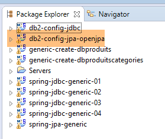 |  |
Le projet [db2-config-jpa-openjpa] configure la couche [JPA] de l'architecture de tests :
 |
Le projet est analogue au projet de configuration [mysql-config-jpa-openjpa] de la couche JPA OpenJpa du SGBD MySQL (cf paragraphe 8.3). En effet, les deux SGBD utilisent l'annotation [@GeneratedValue(strategy = GenerationType.IDENTITY)] pour générer les clés primaires. Il n'y a qu'une modification à faire. Elle est dans la définition du bean [jpaVendorAdapter] de la classe [ConfigJpa] :
// le provider JPA
@Bean
public JpaVendorAdapter jpaVendorAdapter() {
OpenJpaVendorAdapter openJpaVendorAdapter = new OpenJpaVendorAdapter();
openJpaVendorAdapter.setShowSql(false);
openJpaVendorAdapter.setDatabase(Database.DB2);
openJpaVendorAdapter.setGenerateDdl(true);
return openJpaVendorAdapter;
}
- ligne 6 : on indique à l'implémentation JPA qu'elle va travailler avec une base DB2. L'implémentation JPA va alors adopter et les types de données propriétaires et le SQL propriétaire de ce SGBD.
Ces modifications faites, l'exécution de la configuration [spring-jpa-generic-JUnitTestDao-openjpa] doit réussir.
 |  |
12.4. Configuration de la couche JPA Hibernate
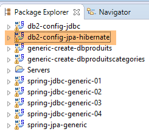 | 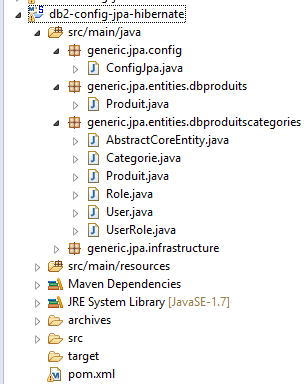 |
Note : faire [Alt-F5] pour régénérer l'ensemble des projets Maven.
Le projet [db2-config-jpa-hibernate] est analogue au projet [mysql-config-jpa-hibernate] (paragraphe 6.3) avec les mêmes modifications qui ont présidé au portage du [mysql-config-jpa-openjpa] vers le projet [db2-config-jpa-openjpa] (paragraphe 12.3).
Ces modifications faites, l'exécution de la configuration [spring-jpa-generic-JUnitTestDao-hibernate-eclipselink] doit réussir.
12.5. Configuration de la couche JPA EclipseLink
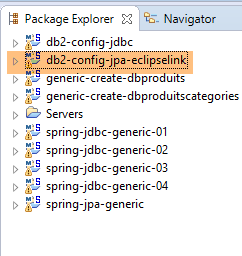 | 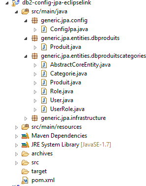 |
Note : faire [Alt-F5] pour régénérer l'ensemble des projets Maven.
Le projet [db2-config-jpa-eclipselink] est analogue au projet [mysql-config-jpa-eclipselink] (paragraphe 7.3) avec les mêmes modifications qui ont présidé au portage du [mysql-config-jpa-openjpa] vers le projet [db2-config-jpa-openjpa] (paragraphe 12.3).
Ces modifications faites, l'exécution de la configuration [spring-jpa-generic-JUnitTestDao-hibernate-eclipselink] doit réussir.